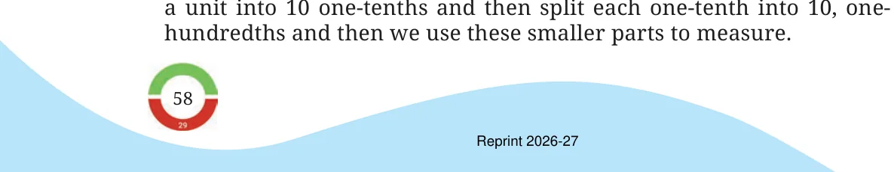
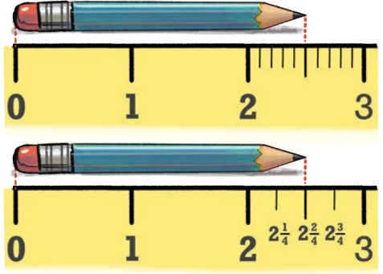
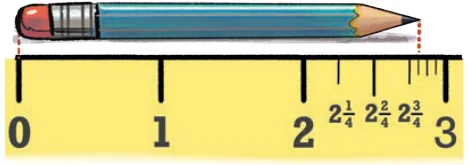
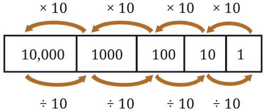
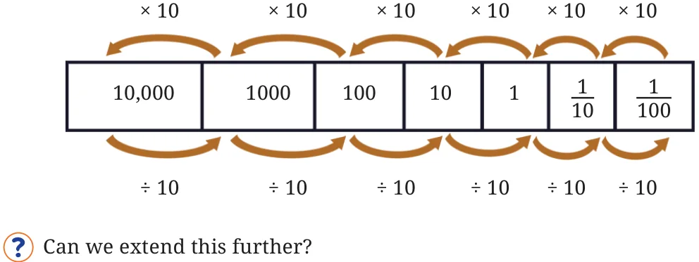
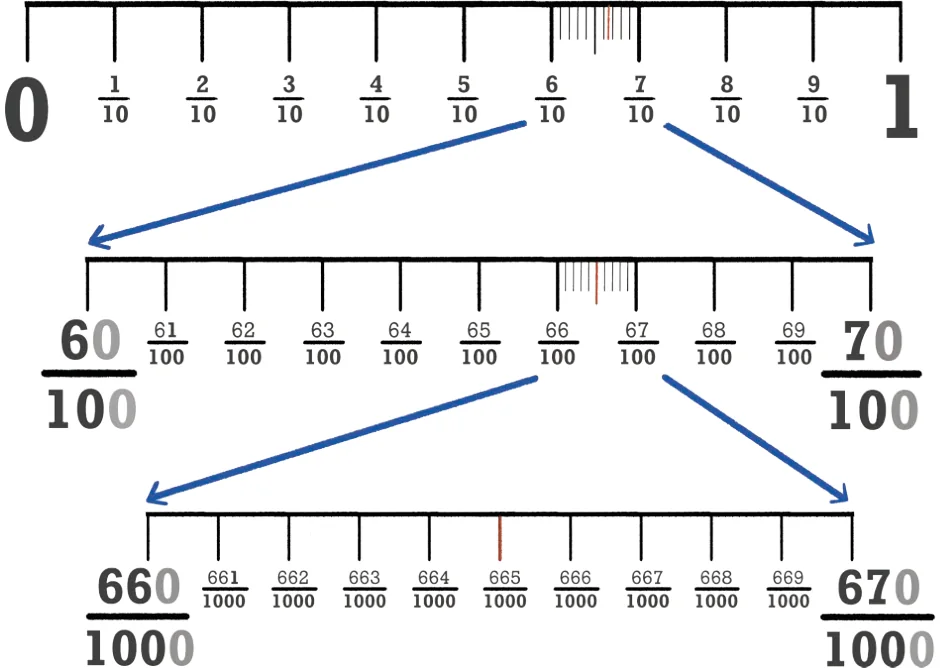
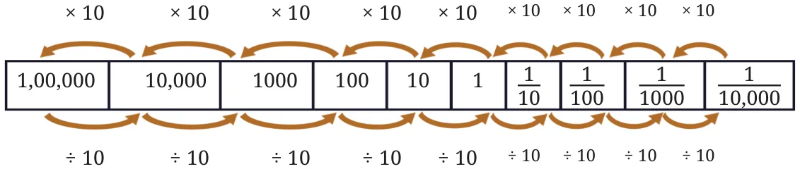

You may have noticed that whenever we need to measure something more accurately, we split a part into 10 (smaller) equal parts ― we split

Can we not split a unit into 4 equal parts, 5 equal parts, 8 equal parts, or any other number of equal parts instead? Yes, we can. The example below compares how the same length is represented when the unit is split into 10 equal parts and when the unit is split into 4 equal parts. If an even more precise measure is needed, each quarter can further be split into four equal parts. Each part then measures \(\frac{1}{16}\) of a unit, i.e., 16 such parts make 1 unit.


Then why split a unit into 10 parts every time? The reason is the special role that 10 plays in the Indian place value system. For a whole number written in the Indian place value system - for example, \(281 -\) the place value of 2 is hundreds (100), that of 8 is tens (10), and that of 1 is one (1). Each place value is 10 times bigger than the one immediately to its right. Equivalently, each place value is 10 times smaller than the one immediately to its left: 10 ones make 1 ten, 10 tens make 1 hundred, 10 hundreds make 1 thousand, and so on.

In order to extend this system of writing numbers to quantities smaller than one, we divide one into 10 equal parts. What does this give? It gives one-tenth. Further dividing it into 10 parts gives one-hundredth, and so on.

What will the fraction be when \(\frac{1}{100}\) is split into 10 equal parts? It will be \(\frac{1}{1000}\) , i.e., a thousand such parts make up a unit.

Just as when we extend to the left of 10,000, we get bigger place values at each step, we can also extend to the right of \(\frac{1}{1000}\), getting smaller place values at each step.

This way of writing numbers is called the "decimal system" since it is based on the number 10; "decem" means ten in Latin, which in turn is cognate to the Sanskrit daśha meaning 10, with similar words for 10 occurring across many Indian languages including Odia, Konkani, Marathi, Gujarati, Hindi, Kashmiri, Bodo, and Assamese. We shall learn about other ways of writing numbers in later grades.
How Big?
We already know that a hundred 10s make 1000, and a hundred 100s make 10000.
We can ask similar questions about fractional parts:
- How many thousandths make one unit?
- How many thousandths make one tenth?
- How many thousandths make one hundredth?
- How many tenths make one ten?
- How many hundredths make one ten?
Make a few more questions of this kind and answer them.